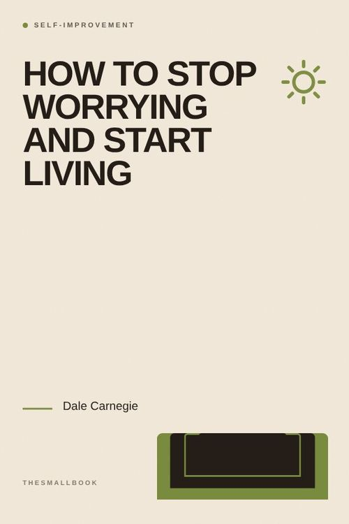
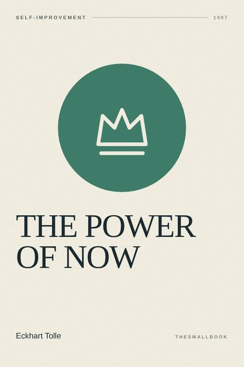

Library › Ask the Library › How do I stop feeling stressed and anxious?
How do I stop feeling stressed and anxious?
The short answer
Most stress lives in the past and future, not the present. Shrink your world to today, accept the worst case, and sort what's actually in your control.
The books behind the answer

How to Stop Worrying and Start Living
Dale Carnegie · 1948 · 8 min · 6 lessons
Live in day-tight compartments, accept the worst, then improve on it - worry is a habit, and habits have off-switches.
- Day-Tight Compartments: Shut the iron doors on yesterday and tomorrow. Today is all you have to survive.

The Daily Stoic
Ryan Holiday & Stephen Hanselman · 2016 · 8 min · 6 lessons
One page of ancient wisdom per day: control what you can, accept what you can't, and turn every obstacle into curriculum.
- The Dichotomy of Control: Sort everything into 'in my control' and 'not'. You'll find most of your stress isn't yours to carry.

The Power of Now
Eckhart Tolle · 1997 · 8 min · 6 lessons
All negativity is caused by time-denial of the present. Anxiety lives in the future, regret in the past - life only ever happens now.
- You Are Not Your Mind: Anxiety is the mind living in the future. Come back to this breath, this body, this moment.

The Subtle Art of Not Giving a F*ck
Mark Manson · 2016 · 9 min · 7 lessons
The desire for more positive experience is itself a negative experience. Choose your struggles instead of avoiding them.
- Choose Better Values: Every life has pain, you get to choose which one. Pick a struggle worth having.
A failure that proves it
Why did The Titanic fail?
1912 · EGO · Loss: 1,514 lives
The Titanic's real mistake was certainty, it carried too few lifeboats because it 'couldn't sink'. Never let comfort erase preparation.
The moment you believe you can't fail is the moment you've removed every safeguard that prevents failure. Confidence builds ships; arrogance removes the lifeboats.
Also asked in Hindi and Hinglish
People also ask this as: tension kaise kam karein, stress door kaise karein. The answer on this page stays in simple English, and the live book can be read in Hindi or Hinglish.
Questions people ask next
Can I read this in Hindi?
Yes. This answer is written in simple English. Open any linked book and choose Hindi or Hinglish to read the full lessons in your language, with audio where available.